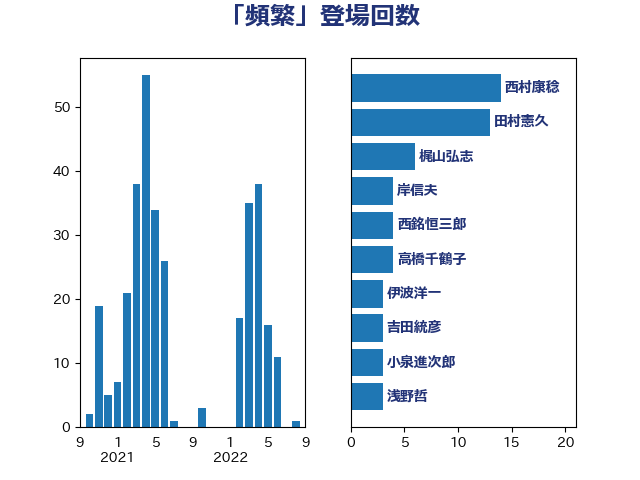

単語「頻繁」

| 西村康稔 | 自由民主党 | 14 回 |
| 田村憲久 | 自由民主党 | 13 回 |
| 梶山弘志 | 自由民主党 | 6 回 |
| 岸信夫 | 自由民主党 | 4 回 |
| 西銘恒三郎 | 自由民主党 | 4 回 |
| 高橋千鶴子 | 日本共産党 | 4 回 |
| 伊波洋一 | 無所属 | 3 回 |
| 吉田統彦 | 立憲民主党 | 3 回 |
| 小泉進次郎 | 自由民主党 | 3 回 |
| 浅野哲 | 国民民主党 | 3 回 |
| 牧山ひろえ | 立憲民主党 | 3 回 |
| 石井苗子 | 日本維新の会 | 3 回 |
| 石破茂 | 自由民主党 | 3 回 |
| 福山哲郎 | 立憲民主党 | 3 回 |
| 菅義偉 | 自由民主党 | 3 回 |
| 音喜多駿 | 日本維新の会 | 3 回 |
| 伊藤俊輔 | 立憲民主党 | 2 回 |
| 伊藤岳 | 日本共産党 | 2 回 |
| 塩川鉄也 | 日本共産党 | 2 回 |
| 山岸一生 | 立憲民主党 | 2 回 |
| 岩屋毅 | 自由民主党 | 2 回 |
| 岸田文雄 | 自由民主党 | 2 回 |
| 岸真紀子 | 立憲民主党 | 2 回 |
| 川田龍平 | 立憲民主党 | 2 回 |
| 徳永エリ | 立憲民主党 | 2 回 |
| 斎藤アレックス | 国民民主党 | 2 回 |
| 新藤義孝 | 自由民主党 | 2 回 |
| 本村伸子 | 日本共産党 | 2 回 |
| 森屋隆 | 立憲民主党 | 2 回 |
| 武見敬三 | 自由民主党 | 2 回 |
| 浜口誠 | 国民民主党 | 2 回 |
| 清水貴之 | 日本維新の会 | 2 回 |
| 田名部匡代 | 立憲民主党 | 2 回 |
| 矢倉克夫 | 公明党 | 2 回 |
| 神谷裕 | 立憲民主党 | 2 回 |
| 福島みずほ | 社会民主党 | 2 回 |
| 芳賀道也 | 国民民主党 | 2 回 |
| 荒井優 | 立憲民主党 | 2 回 |
| 赤池誠章 | 自由民主党 | 2 回 |
| 赤羽一嘉 | 公明党 | 2 回 |
| 足立康史 | 日本維新の会 | 2 回 |
| 逢坂誠二 | 立憲民主党 | 2 回 |
| こやり隆史 | 自由民主党 | 1 回 |
| ながえ孝子 | 無所属 | 1 回 |
| 三谷英弘 | 自由民主党 | 1 回 |
| 中谷一馬 | 立憲民主党 | 1 回 |
| 丸川珠代 | 自由民主党 | 1 回 |
| 井上哲士 | 日本共産党 | 1 回 |
| 井上英孝 | 日本維新の会 | 1 回 |
| 井坂信彦 | 立憲民主党 | 1 回 |
| 伊佐進一 | 公明党 | 1 回 |
| 伊藤孝恵 | 国民民主党 | 1 回 |
| 伊藤孝江 | 公明党 | 1 回 |
| 佐藤茂樹 | 公明党 | 1 回 |
| 北側一雄 | 公明党 | 1 回 |
| 北村経夫 | 自由民主党 | 1 回 |
| 古川康 | 自由民主党 | 1 回 |
| 嘉田由紀子 | 無所属 | 1 回 |
| 國重徹 | 公明党 | 1 回 |
| 堀場幸子 | 日本維新の会 | 1 回 |
| 塩村あやか | 立憲民主党 | 1 回 |
| 大串博志 | 立憲民主党 | 1 回 |
| 天畠大輔 | れいわ新選組 | 1 回 |
| 奥野総一郎 | 立憲民主党 | 1 回 |
| 室井邦彦 | 日本維新の会 | 1 回 |
| 宮本岳志 | 日本共産党 | 1 回 |
| 宮本徹 | 日本共産党 | 1 回 |
| 寺田学 | 立憲民主党 | 1 回 |
| 小林鷹之 | 自由民主党 | 1 回 |
| 小池晃 | 日本共産党 | 1 回 |
| 小沢雅仁 | 立憲民主党 | 1 回 |
| 小西洋之 | 立憲民主党 | 1 回 |
| 小野泰輔 | 日本維新の会 | 1 回 |
| 尾崎正直 | 自由民主党 | 1 回 |
| 山岡達丸 | 立憲民主党 | 1 回 |
| 山添拓 | 日本共産党 | 1 回 |
| 岡本あき子 | 立憲民主党 | 1 回 |
| 川崎ひでと | 自由民主党 | 1 回 |
| 工藤彰三 | 自由民主党 | 1 回 |
| 平井卓也 | 自由民主党 | 1 回 |
| 打越さく良 | 立憲民主党 | 1 回 |
| 新垣邦男 | 立憲民主党 | 1 回 |
| 新妻秀規 | 公明党 | 1 回 |
| 日下正喜 | 公明党 | 1 回 |
| 末松義規 | 立憲民主党 | 1 回 |
| 松野博一 | 自由民主党 | 1 回 |
| 柳ヶ瀬裕文 | 日本維新の会 | 1 回 |
| 榛葉賀津也 | 国民民主党 | 1 回 |
| 横沢高徳 | 立憲民主党 | 1 回 |
| 櫻井周 | 立憲民主党 | 1 回 |
| 武井俊輔 | 自由民主党 | 1 回 |
| 沢田良 | 日本維新の会 | 1 回 |
| 河野太郎 | 自由民主党 | 1 回 |
| 河野義博 | 公明党 | 1 回 |
| 泉健太 | 立憲民主党 | 1 回 |
| 浦野靖人 | 日本維新の会 | 1 回 |
| 浮島智子 | 公明党 | 1 回 |
| 渡辺周 | 立憲民主党 | 1 回 |
| 漆間譲司 | 日本維新の会 | 1 回 |
| 熊谷裕人 | 立憲民主党 | 1 回 |
| 片山大介 | 日本維新の会 | 1 回 |
| 牧原秀樹 | 自由民主党 | 1 回 |
| 玄葉光一郎 | 立憲民主党 | 1 回 |
| 田村貴昭 | 日本共産党 | 1 回 |
| 石井章 | 日本維新の会 | 1 回 |
| 石垣のりこ | 立憲民主党 | 1 回 |
| 石川香織 | 立憲民主党 | 1 回 |
| 穀田恵二 | 日本共産党 | 1 回 |
| 空本誠喜 | 日本維新の会 | 1 回 |
| 竹内真二 | 公明党 | 1 回 |
| 竹内譲 | 公明党 | 1 回 |
| 笠井亮 | 日本共産党 | 1 回 |
| 篠原孝 | 立憲民主党 | 1 回 |
| 篠原豪 | 立憲民主党 | 1 回 |
| 細野豪志 | 自由民主党 | 1 回 |
| 美延映夫 | 日本維新の会 | 1 回 |
| 茂木敏充 | 自由民主党 | 1 回 |
| 菅家一郎 | 自由民主党 | 1 回 |
| 萩生田光一 | 自由民主党 | 1 回 |
| 蓮舫 | 立憲民主党 | 1 回 |
| 近藤和也 | 立憲民主党 | 1 回 |
| 進藤金日子 | 自由民主党 | 1 回 |
| 道下大樹 | 立憲民主党 | 1 回 |
| 金子恭之 | 自由民主党 | 1 回 |
| 鈴木庸介 | 立憲民主党 | 1 回 |
| 鈴木義弘 | 国民民主党 | 1 回 |
| 長妻昭 | 立憲民主党 | 1 回 |
| 長浜博行 | 無所属 | 1 回 |
| 須藤元気 | 無所属 | 1 回 |
| 高木かおり | 日本維新の会 | 1 回 |
| 高木啓 | 自由民主党 | 1 回 |
| 高野光二郎 | 自由民主党 | 1 回 |
| 鬼木誠 | 立憲民主党 | 1 回 |
| 麻生太郎 | 自由民主党 | 1 回 |